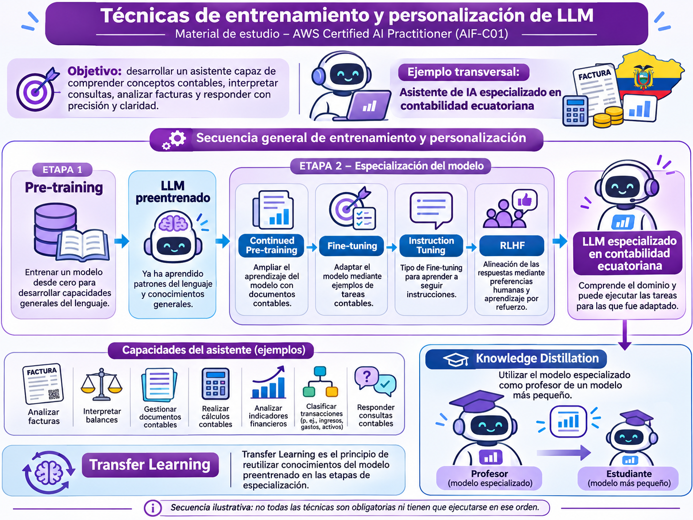

Secuencia de entrenamiento y especialización
Panorama de las técnicas y el ejemplo transversal del asistente de contabilidad ecuatoriana.

Panorama de las técnicas y el ejemplo transversal del asistente de contabilidad ecuatoriana.
